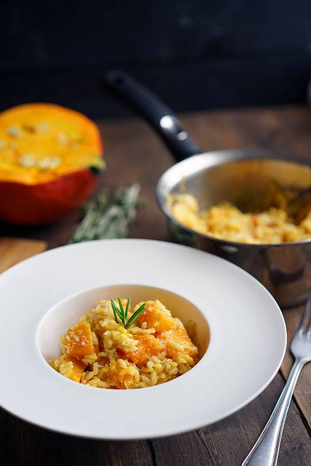

Рецепты
Тортеллини с грибами и сыром
Ингредиенты
Тесто для пасты 280 г
Грибы 170 г
Лук 1 шт
Чеснок 2 зубчика
Мята пучок
Оливковое масло 2 ст.л
Цедра лимона по вкусу
Творожный сыр 150 г
Грибной бульон по вкусу

Паста с шафраном и рикоттой
Ингредиенты
Шафран 0.5 г
Грудинка/панчетта 100 г
Оливковое масло 1 ст.л
Паста 300 г
Рикотта 200 г
Черная паста с белым соусом бешамель и грибами
Ингредиенты
Паста 200 г
Шампиньоны 6 шт
Масло 25 г
Мука 25 г
Молоко 300 г
Сыр 30 г
Ризотто с вялеными перцами, гребешком и капустой
Ингредиенты
Гребешок50 г
Бульон1-1.5 л
Оливковое масло по вкусу
Сельдерей1 стебель
Рис карнаролли250 г
Брюссельская капуста70 г
Вяленые перцы40 г
Сливочное масло40 г
Пармезан50 г
Пицца с инжиром, прошутто и козьим сыром
Ингредиенты
Тесто150 г
Прошутто60 г
Инжир 3 шт
Козий сыр50 г
Оливковое масло3 ст.л
Томатный соус2 ст.л
Руккола50 г
Равиоли с тыквой и горошком в томатном соусе
Ингредиенты
Тыква200 г
Лук1 шт
Горошек 50 г
Тесто для пасты300 г
Томат1 шт

Ризотто с тыквой
Ингредиенты
Тыкваполовина
Чеснок4 зубчика
Оливковое масло 50 мл
Лук половина
Рис Карнаролли200 г
Бульонпо вкусу
Томатный суп с чиабаттой
Ингредиенты
Оливковое масло30 мл
Чиабатта1 шт
Помидоры черри 400 г
Томаты в собственном соку400 мл
Базилик1 пучок
Чеснок3 зубчика
Овощная лазанья
Ингредиенты
Листы лазаньи6 шт
Перец сладкий1 шт
Лук 1 шт
Цукини1 шт
Густой соус300 г
Моцарелла100 г
Базилик4 листика

Паста с луковым джемом
Ингредиенты
Лук2 шт
Оливковое масло30 мл
Сливочное масло50 г
Бульон1 л
Букатини 300 г
Пармезан30 г
Тимьян свежий1 веточка
Перец молотыйпо вкусу